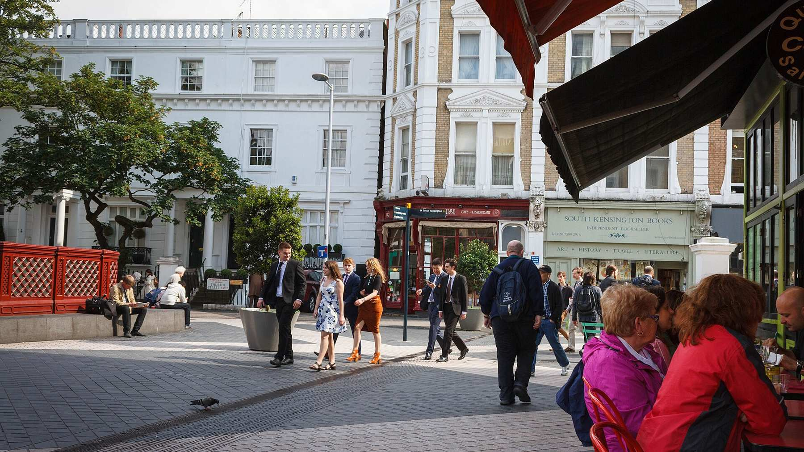
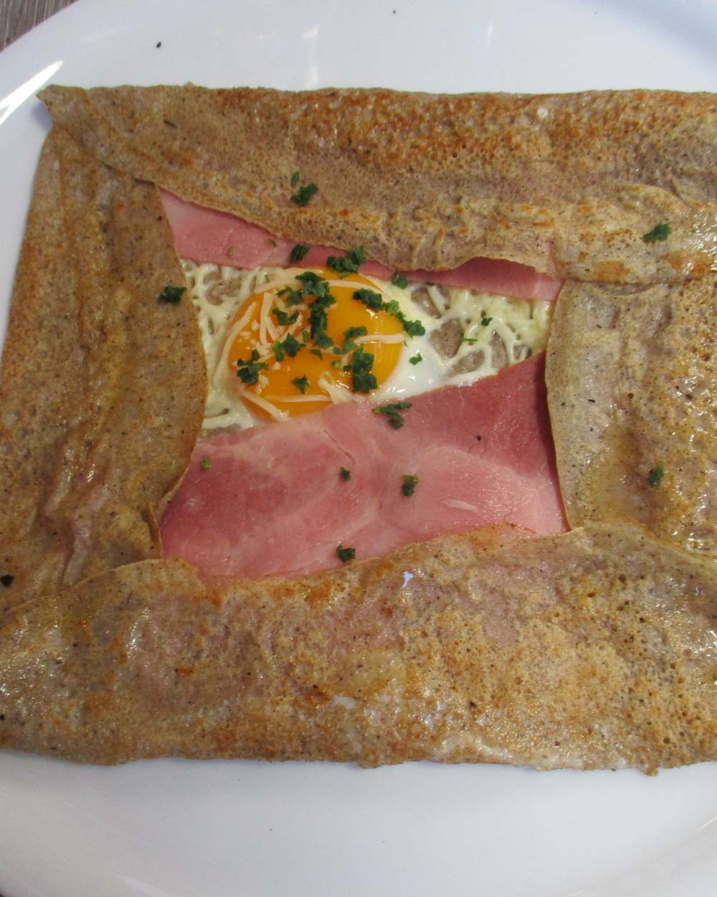
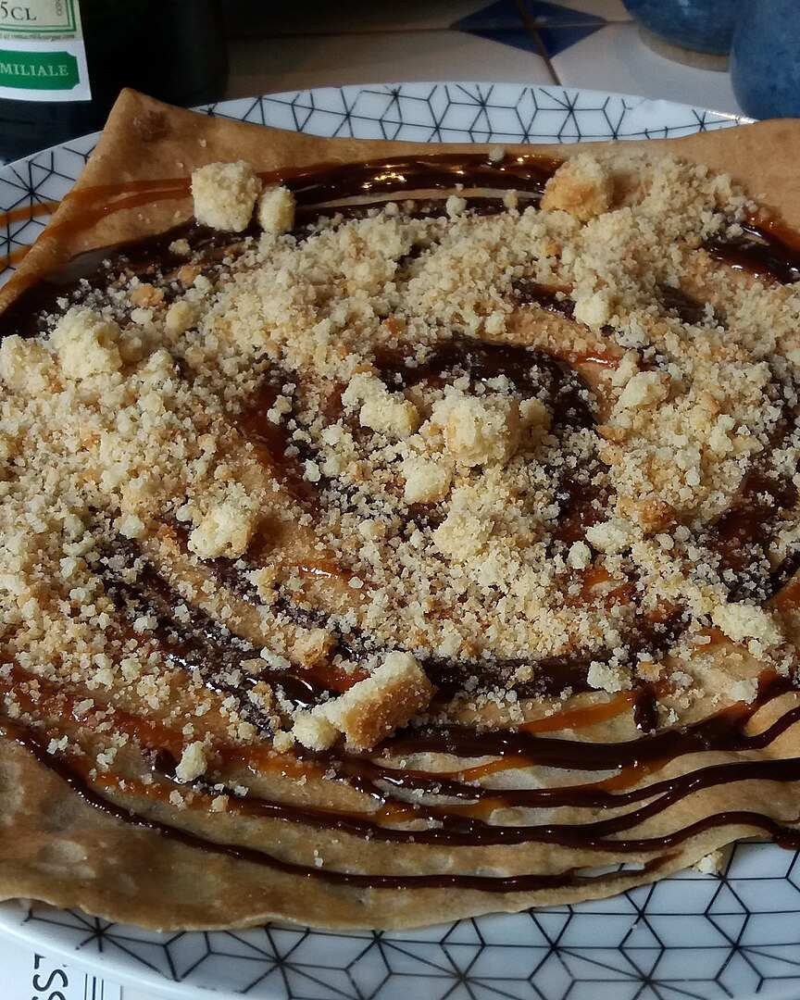

2–6 Exhibition Road · London SW7
Crêpes & galettes, steps from the museums.
Savoury galettes, sweet crêpes, waffles, breakfast and coffee at the South Kensington end of Exhibition Road, a stroll from the museums and Hyde Park.
The collection
On permanent display

- Exhibit 01
- Savoury galettes
- Buckwheat, folded and filled: ham, cheese and mushroom among the favourites.

- Exhibit 02
- Sweet crêpes
- From Nutella and strawberry to the classics, plus golden waffles and milkshakes.
- Exhibit 03
- Coffee & juices
- Crafted coffee, fresh juices, smoothies and hot drinks.
- Gluten-freeoptions available
- Vegetarian & veganoptions available
- Halaloptions available
Gallery 2 · Served daily 8.30am – noon
Breakfast
From the creperie’s published breakfast menu. Full crêpe, galette and drinks menus with prices would be added before launch.
- 01Avocado on sourdough toast
- 02Poached egg on sourdough toast
- 03Avocado & poached egg on sourdough
- 04Scrambled egg on sourdough
- 05Avocado, smoked salmon & poached egg
- 06Scrambled egg with smoked salmon
- 07KC VeganAvocado, squash, spinach, cherry tomatoes, mushrooms, hash brown, toast
- 08KC BreakfastAvocado, squash, spinach, cherry tomatoes, two poached eggs, toast, chilli flakes
- 09MediterraneanTwo poached eggs, spinach, feta, cherry tomatoes, toast
- 10Full EnglishBacon, tomato, mushrooms, sausage, hash brown, beans, two eggs, toast
- 11Berry’s SuperpowerGreek yoghurt, blueberries, raspberries, strawberries, granola, honey or maple
- 12Croissant · pain au chocolat · butter & jam toast
Visitor information
2–6 Exhibition Road
South Kensington
London SW7 2HF
- Telephone
- 020 7589 8947
- Getting here
- South Kensington Underground, then a short walk up Exhibition Road
Opening hours
Daily
8.30am – 11.30pm
Hours as listed on the creperie’s claimed Yelp page and Time Out; other directories show 9am openings, so to be confirmed before launch.